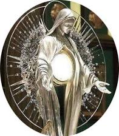

The 1412 Eucharistic Miracle of Herentals, Belgium, involves five stolen consecrated Hosts that were found completely undamaged in the rain, arranged in the shape of a cross. The miraculous event led to the conversion of a thief and remains deeply venerated in the region.
Authenticity: On January 2, 1442, the magistrate of Herentals officially recognized the miraculous event.
The Chapel: A small chapel known as De Hegge was built at the site where the Hosts were found. It later became a prominent shrine visited by prelates and popes over the centuries.
The Procession: Two 19th-century paintings by Antoon van Ysendyck depicting the miracle are traditionally processed to the field each year. These paintings are ordinarily kept in the Sint-Waldetrudiskerk (St. Waltrude's Church) in Herentals.